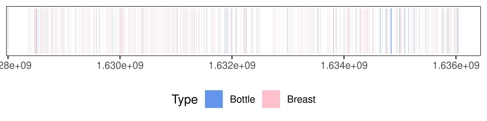
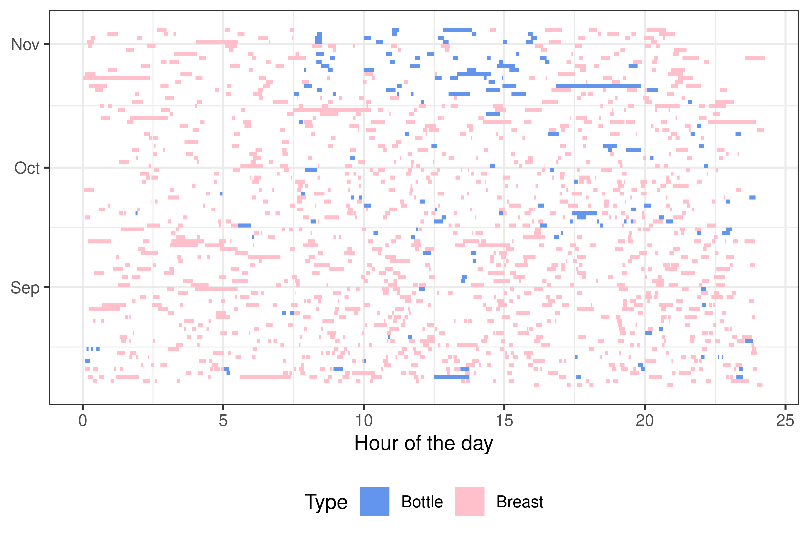
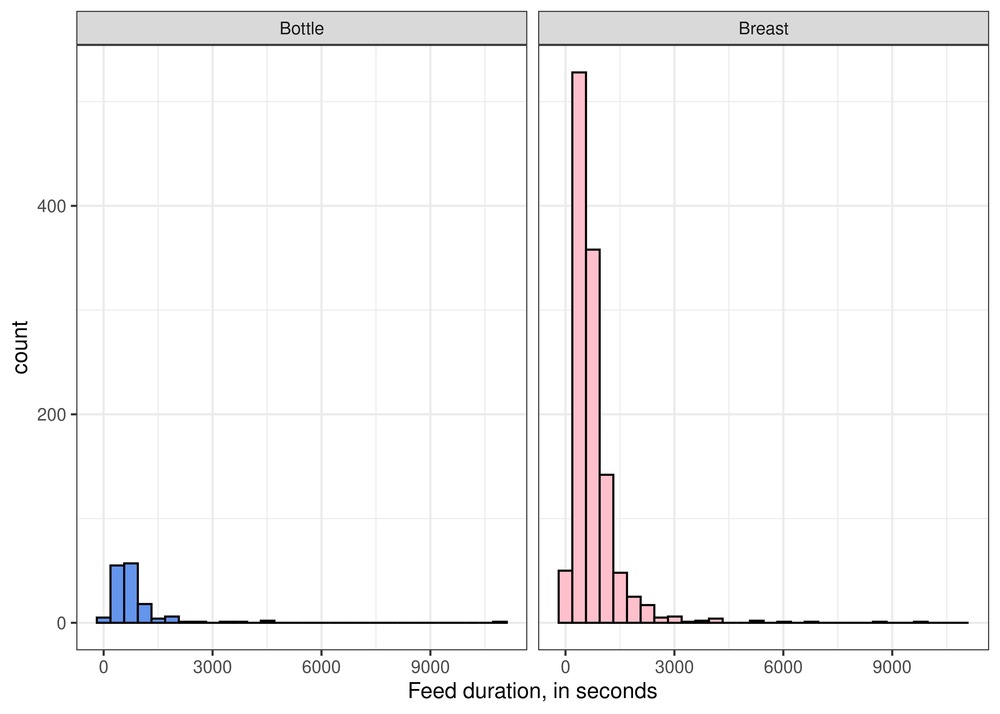
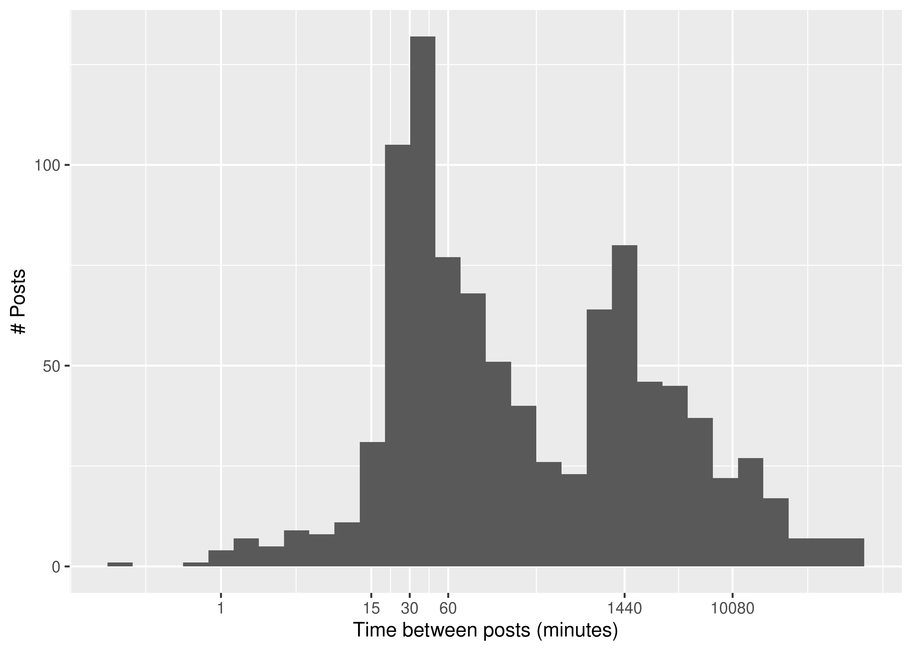

28 Dates and Times
Objectives
- Understand the complexities of working with datetime data
- Create datetime formatted data from character and numeric encodings
- Format/print datetime data in the desired format
28.1 Why Dates and Times are hard
I’m going to let Tom Scott deliver this portion of the material for me, as his times and timezones video is excellent and entertaining.
There is also an excellent StackOverflow question [1] and answers [3] demonstrating exactly how times and time zones can get very confusing even in relatively simple circumstances.
Long story short, we will be using libraries in R and python which handle some of these complexities for us, because dates, times, and timezones are hard and we really don’t want to know exactly how hard they are. The libraries I’ve chosen for this are datetime in Python (used by Pandas), and lubridate in R.
pip install datetimeimport datetime
today = datetime.date.today()
today
## datetime.date(2025, 6, 10)
print(today)
## 2025-06-10
now = datetime.datetime.now()
now
## datetime.datetime(2025, 6, 10, 9, 8, 7, 930683)
print(now)
## 2025-06-10 09:08:07.93068328.2 Getting Started
Let’s differentiate between three types of data which refer to a point in time:
- a date
- a time within a day
- a date-time - a specific time on a specific date
Now, let’s think about all of the different ways we can specify dates. The table below has examples along with strptime formats that are used in both R and python for telling the computer which date format is used.
| Example | Type | Notes |
strptime format |
|
|---|---|---|---|---|
| 1 | January 12, 2023 | date | Common in US/N. America | %B %d, %Y |
| 2 | 12 January 2023 | date | Common in Europe | %d %B %Y |
| 3 | 01/12/2023 | date | Common in US | %m/%d/%Y |
| 4 | 1/12/23 | date | Common in US | %m/%d/%y |
| 5 | 12/01/2023 | date | Common in Europe/Asia | %d/%m/%Y |
| 6 | 2023-01-12 | date | ISO 8601 standard (automatically sorts chronologically) |
%Y-%m-%d or %F |
| 7 | 12 2023 | date | day of year + year | %j %Y |
| 8 | 9:23 PM | time | 12h time | %I:%M %p |
| 9 | 21:23 | time | 24h time (military time) | %H:%M or %R |
| 10 | 21:23:05 | time | 24h time (with seconds) | %H:%M:%S or %T |
| 11 | 2023-01-12T21:23:05 | datetime | ISO 8601 international standard | %FT%T |
Note that rows 4 and 5 of Table 28.1 are ambiguous if you don’t know what location your data comes from - the dates could refer to December 1, 2023 or January 12, 2023. This only gets worse if you use 2-digit years.
There are three main ways that you might want to create a date/time [4]:
- From a string
- From individual date/time components
- From an existing date/time object
28.3 Creating Dates and Times
28.3.1 Creation from Strings
Dates and times are often stored in tabular formats as strings. In some cases, these are read in and automatically formatted as date-times, but in other situations, you have to specify the format yourself.
28.3.1.1 Demo: Datetimes from Strings
Let’s use some data from the US Geological Service with records of earthquakes with magnitude greater than 6 on the Richter scale that occurred between January 1, 2000 and January 1, 2023. You can pull this data yourself using https://earthquake.usgs.gov/earthquakes/map/, but you can also access a CSV of the data here.
library(lubridate)
quake <- read.csv("https://github.com/srvanderplas/datasets/raw/main/raw/earthquakes2000.csv")
str(quake)
## 'data.frame': 3484 obs. of 13 variables:
## $ X.EventID : chr "us7000j0n4" "nc73821036" "us6000j985" "us6000j8lp" ...
## $ Time : chr "2022-12-28T16:34:20Z" "2022-12-20T10:34:24Z" "2022-12-14T18:40:26Z" "2022-12-11T14:31:29Z" ...
## $ Latitude : num -21.3 40.5 51.6 17.2 -15.3 ...
## $ Longitude : num 171 -124 179 -101 -173 ...
## $ Depth.km : num 10 17.9 73 18 38 ...
## $ Author : chr "us" "nc" "us" "us" ...
## $ Catalog : chr "us" "nc" "us" "us" ...
## $ Contributor : chr "us" "nc" "us" "us" ...
## $ ContributorID : chr "us7000j0n4" "nc73821036" "us6000j985" "us6000j8lp" ...
## $ MagType : chr "mww" "mw" "mww" "mww" ...
## $ Magnitude : num 6.1 6.4 6.3 6 6.8 6.1 6.2 6 7 6.9 ...
## $ MagAuthor : chr "us" "nc" "us" "us" ...
## $ EventLocationName: chr "southeast of the Loyalty Islands" "15km WSW of Ferndale, CA" "Rat Islands, Aleutian Islands, Alaska" "8 km E of Técpan de Galeana, Mexico" ...By default, read.csv reads the time information in as a character variable.
library(readr)
quake2 <- read_csv("https://github.com/srvanderplas/datasets/raw/main/raw/earthquakes2000.csv")
str(quake2)
## spc_tbl_ [3,484 × 13] (S3: spec_tbl_df/tbl_df/tbl/data.frame)
## $ #EventID : chr [1:3484] "us7000j0n4" "nc73821036" "us6000j985" "us6000j8lp" ...
## $ Time : POSIXct[1:3484], format: "2022-12-28 16:34:20" "2022-12-20 10:34:24" ...
## $ Latitude : num [1:3484] -21.3 40.5 51.6 17.2 -15.3 ...
## $ Longitude : num [1:3484] 171 -124 179 -101 -173 ...
## $ Depth/km : num [1:3484] 10 17.9 73 18 38 ...
## $ Author : chr [1:3484] "us" "nc" "us" "us" ...
## $ Catalog : chr [1:3484] "us" "nc" "us" "us" ...
## $ Contributor : chr [1:3484] "us" "nc" "us" "us" ...
## $ ContributorID : chr [1:3484] "us7000j0n4" "nc73821036" "us6000j985" "us6000j8lp" ...
## $ MagType : chr [1:3484] "mww" "mw" "mww" "mww" ...
## $ Magnitude : num [1:3484] 6.1 6.4 6.3 6 6.8 6.1 6.2 6 7 6.9 ...
## $ MagAuthor : chr [1:3484] "us" "nc" "us" "us" ...
## $ EventLocationName: chr [1:3484] "southeast of the Loyalty Islands" "15km WSW of Ferndale, CA" "Rat Islands, Aleutian Islands, Alaska" "8 km E of Técpan de Galeana, Mexico" ...
## - attr(*, "spec")=
## .. cols(
## .. `#EventID` = col_character(),
## .. Time = col_datetime(format = ""),
## .. Latitude = col_double(),
## .. Longitude = col_double(),
## .. `Depth/km` = col_double(),
## .. Author = col_character(),
## .. Catalog = col_character(),
## .. Contributor = col_character(),
## .. ContributorID = col_character(),
## .. MagType = col_character(),
## .. Magnitude = col_double(),
## .. MagAuthor = col_character(),
## .. EventLocationName = col_character()
## .. )
## - attr(*, "problems")=<externalptr>However, if we use readr::read_csv, the data is correctly read in as a POSIXct format, which is how R indicates that something is a datetime object.
If we want to directly convert the Time column in quake to a datetime, we can use the lubridate package, which has helper functions ymd_hms, ymd, and more. Our data is formatted in ISO 8601 standard format, which means we can easily read it in with ymd_hms() .
library(lubridate)
library(dplyr)
quake <- quake %>%
mutate(dateTime = ymd_hms(Time))
str(quake)
## 'data.frame': 3484 obs. of 14 variables:
## $ X.EventID : chr "us7000j0n4" "nc73821036" "us6000j985" "us6000j8lp" ...
## $ Time : chr "2022-12-28T16:34:20Z" "2022-12-20T10:34:24Z" "2022-12-14T18:40:26Z" "2022-12-11T14:31:29Z" ...
## $ Latitude : num -21.3 40.5 51.6 17.2 -15.3 ...
## $ Longitude : num 171 -124 179 -101 -173 ...
## $ Depth.km : num 10 17.9 73 18 38 ...
## $ Author : chr "us" "nc" "us" "us" ...
## $ Catalog : chr "us" "nc" "us" "us" ...
## $ Contributor : chr "us" "nc" "us" "us" ...
## $ ContributorID : chr "us7000j0n4" "nc73821036" "us6000j985" "us6000j8lp" ...
## $ MagType : chr "mww" "mw" "mww" "mww" ...
## $ Magnitude : num 6.1 6.4 6.3 6 6.8 6.1 6.2 6 7 6.9 ...
## $ MagAuthor : chr "us" "nc" "us" "us" ...
## $ EventLocationName: chr "southeast of the Loyalty Islands" "15km WSW of Ferndale, CA" "Rat Islands, Aleutian Islands, Alaska" "8 km E of Técpan de Galeana, Mexico" ...
## $ dateTime : POSIXct, format: "2022-12-28 16:34:20" "2022-12-20 10:34:24" ...We can then test whether quake$dateTime is the same as quake2$Time :
all.equal(quake2$Time, quake$dateTime)
## [1] TRUESo in the case that your data is not automatically read in as a date-time, you can use the helper functions from lubridate (ymd_hms, ymd, mdy, …) to convert strings to date-time data.
As lovely as the lubridate package is, there are some situations where using the tidyverse may not be desirable or even allowed. It is helpful to know how to solve this problem in base R, even if 99% of the time we can use the much easier-to-remember lubridate package.
In this case, we would use the as.POSIXct function, and we probably want to have the reference page up (run ?strptime in the R console to pull up the help page).
We’ll need to get the codes that tell R what format our datetimes use - you can use Table 28.1, if you like, or read the as.POSIXct help page to see all possible format codes.
quake <- read.csv("https://github.com/srvanderplas/datasets/raw/main/raw/earthquakes2000.csv")
str(quake)
## 'data.frame': 3484 obs. of 13 variables:
## $ X.EventID : chr "us7000j0n4" "nc73821036" "us6000j985" "us6000j8lp" ...
## $ Time : chr "2022-12-28T16:34:20Z" "2022-12-20T10:34:24Z" "2022-12-14T18:40:26Z" "2022-12-11T14:31:29Z" ...
## $ Latitude : num -21.3 40.5 51.6 17.2 -15.3 ...
## $ Longitude : num 171 -124 179 -101 -173 ...
## $ Depth.km : num 10 17.9 73 18 38 ...
## $ Author : chr "us" "nc" "us" "us" ...
## $ Catalog : chr "us" "nc" "us" "us" ...
## $ Contributor : chr "us" "nc" "us" "us" ...
## $ ContributorID : chr "us7000j0n4" "nc73821036" "us6000j985" "us6000j8lp" ...
## $ MagType : chr "mww" "mw" "mww" "mww" ...
## $ Magnitude : num 6.1 6.4 6.3 6 6.8 6.1 6.2 6 7 6.9 ...
## $ MagAuthor : chr "us" "nc" "us" "us" ...
## $ EventLocationName: chr "southeast of the Loyalty Islands" "15km WSW of Ferndale, CA" "Rat Islands, Aleutian Islands, Alaska" "8 km E of Técpan de Galeana, Mexico" ...
quake$dateTime2 <- as.POSIXct(quake$Time, "%Y-%m-%dT%H:%M:%S")
all.equal(quake$dateTime, quake$dateTime2)
## [1] TRUESo using as.POSIXct we do not get the convenient handling of time zones that we got using ymd_hms, but we can set the time zone explicitly if we want to do so.
quake$dateTime2 <- as.POSIXct(quake$Time, tz = "UTC", "%Y-%m-%dT%H:%M:%S")
all.equal(quake$dateTime, quake$dateTime2)
## [1] TRUEIn pandas, we can use the to_datetime method. If the format is not specified, pandas will try to guess the date-time format; in this case, the guess works, but if not, you can provide a format = … argument that works the same way as R.
import pandas as pd
quake = pd.read_csv("https://github.com/srvanderplas/datasets/raw/main/raw/earthquakes2000.csv")
quake.dtypes
## #EventID object
## Time object
## Latitude float64
## Longitude float64
## Depth/km float64
## Author object
## Catalog object
## Contributor object
## ContributorID object
## MagType object
## Magnitude float64
## MagAuthor object
## EventLocationName object
## dtype: object
quake.Time[0:10]
## 0 2022-12-28T16:34:20Z
## 1 2022-12-20T10:34:24Z
## 2 2022-12-14T18:40:26Z
## 3 2022-12-11T14:31:29Z
## 4 2022-12-04T19:24:15Z
## 5 2022-11-23T01:08:15Z
## 6 2022-11-22T16:39:05Z
## 7 2022-11-22T02:37:57Z
## 8 2022-11-22T02:03:06Z
## 9 2022-11-18T13:37:08Z
## Name: Time, dtype: object
# Convert to datetime
quake['dateTime'] = pd.to_datetime(quake.Time)
quake.dtypes
## #EventID object
## Time object
## Latitude float64
## Longitude float64
## Depth/km float64
## Author object
## Catalog object
## Contributor object
## ContributorID object
## MagType object
## Magnitude float64
## MagAuthor object
## EventLocationName object
## dateTime datetime64[ns, UTC]
## dtype: object
quake.dateTime[0:10]
## 0 2022-12-28 16:34:20+00:00
## 1 2022-12-20 10:34:24+00:00
## 2 2022-12-14 18:40:26+00:00
## 3 2022-12-11 14:31:29+00:00
## 4 2022-12-04 19:24:15+00:00
## 5 2022-11-23 01:08:15+00:00
## 6 2022-11-22 16:39:05+00:00
## 7 2022-11-22 02:37:57+00:00
## 8 2022-11-22 02:03:06+00:00
## 9 2022-11-18 13:37:08+00:00
## Name: dateTime, dtype: datetime64[ns, UTC]
# Convert to datetime
quake['dateTime2'] = pd.to_datetime(quake.Time, format = "%Y-%m-%dT%H:%M:%S")
## ValueError: unconverted data remains when parsing with format "%Y-%m-%dT%H:%M:%S": "Z", at position 0. You might want to try:
## - passing `format` if your strings have a consistent format;
## - passing `format='ISO8601'` if your strings are all ISO8601 but not necessarily in exactly the same format;
## - passing `format='mixed'`, and the format will be inferred for each element individually. You might want to use `dayfirst` alongside this.
quake.dtypes
## #EventID object
## Time object
## Latitude float64
## Longitude float64
## Depth/km float64
## Author object
## Catalog object
## Contributor object
## ContributorID object
## MagType object
## Magnitude float64
## MagAuthor object
## EventLocationName object
## dateTime datetime64[ns, UTC]
## dtype: object
quake.dateTime2[0:10]
## AttributeError: 'DataFrame' object has no attribute 'dateTime2'It’s usually important for new parents to keep a log of the new baby’s feeds, to ensure that the baby is getting enough liquids and isn’t getting dehydrated. I used an app to keep track of my daughter’s feeds from birth (though here, we’ll only work with the first 3 months of data), and it used a reasonable, if not standard way to store dates and times.
Take a look at the first month of feeds. Note that these data are from August 7, 2021 to November 4, 2021 – roughly baby’s first 90 days.
- Convert Start and End to datetime variables
- Can you plot the feeds somehow?
- Can you do arithmetic with datetimes to see if there are any user entry errors?
This data was created by a highly unreliable and error prone couple of individuals – specifically, sleep-deprived new parents.
To do this, you may need to figure out how to specify a non-standard date format in R and/or python. The parse_date_time function is useful in R, and pd.to_datetime() takes a format argument in python.
First, let’s read the data in and explore a bit.
library(lubridate)
library(readr)
feeds <- read_csv("https://raw.githubusercontent.com/srvanderplas/datasets/main/raw/feeds_initial.csv")
head(feeds)
## # A tibble: 6 × 6
## id Start End Type `Quantity (oz)` `Quantity (ml or g)`
## <dbl> <chr> <chr> <chr> <dbl> <dbl>
## 1 1368 20:03:30 11-04-2021 20:45:21… Brea… NA NA
## 2 1366 18:00:29 11-04-2021 18:18:29… Brea… NA NA
## 3 1365 16:27:29 11-04-2021 17:03:26… Brea… NA NA
## 4 1364 14:30:01 11-04-2021 14:42:05… Brea… NA NA
## 5 1367 12:48:29 11-04-2021 13:50:29… Bott… 3 88
## 6 1363 10:59:18 11-04-2021 11:15:18… Bott… 3 88
# Looks like %H:%M:%S %m-%d-%Y format.It looks like the data is stored in a format where the time (%H:%M:%S) is first and the date (%m-%d-%Y) is second. We can use the parse_date_time function in lubridate
feeds <- feeds %>%
mutate(Start = parse_date_time(Start, orders = c("%H:%M:%S %m-%d-%Y")),
End = parse_date_time(End, orders = c("%H:%M:%S %m-%d-%Y")))Let’s then explore how we might plot this data:
library(ggplot2)
ggplot(feeds, aes(xmin = Start, xmax = End, fill = Type)) +
geom_rect(aes(ymin = 1, ymax = 2)) + # Specify default aes
scale_fill_manual(values = c("Bottle" = "cornflowerblue", "Breast" = "pink")) +
theme_bw() + theme(legend.position = "bottom") +
scale_y_continuous(breaks = NULL)
library(ggplot2)
feeds %>%
mutate(day = floor_date(Start, "day"),
hour_start = Start - day,
hour_end = End - day) %>%
mutate(across(starts_with("hour"), ~as.numeric(., units = "hours"))) %>%
mutate(doy = yday(day)) %>%
ggplot(aes(ymin = day, ymax = day+days(1), xmin = hour_start, xmax = hour_end, fill = Type)) +
geom_rect() + # Specify default aes
scale_fill_manual(values = c("Bottle" = "cornflowerblue", "Breast" = "pink")) +
scale_x_continuous("Hour of the day") +
theme_bw() + theme(legend.position = "bottom")
We can also calculate the duration of each feed and look at the distributions for each type of feed.
feeds <- feeds %>%
mutate(duration = End - Start)
ggplot(feeds, aes(x = duration, fill = Type)) + geom_histogram(color = "black") +
scale_fill_manual(values = c("Bottle" = "cornflowerblue", "Breast" = "pink")) +
theme_bw() + theme(legend.position = "none") +
xlab("Feed duration, in seconds") + facet_wrap(~Type)
We can see a few suspiciously long feeds - 9000 seconds is 2.5 hours, which is not unheard of for a baby to breastfeed, but would be an exceptionally long bottle feed (unless a parent fell asleep before hitting “stop” on the feed, which is much more likely).
First, let’s read the data in and explore a bit.
import pandas as pd
feeds = pd.read_csv("https://raw.githubusercontent.com/srvanderplas/datasets/main/raw/feeds_initial.csv")
feeds.head()
## id Start ... Quantity (oz) Quantity (ml or g)
## 0 1368 20:03:30 11-04-2021 ... NaN NaN
## 1 1366 18:00:29 11-04-2021 ... NaN NaN
## 2 1365 16:27:29 11-04-2021 ... NaN NaN
## 3 1364 14:30:01 11-04-2021 ... NaN NaN
## 4 1367 12:48:29 11-04-2021 ... 3.0 88.0
##
## [5 rows x 6 columns]
# Looks like %H:%M:%S %m-%d-%Y format.It looks like the data is stored in a format where the time (%H:%M:%S) is first and the date (%m-%d-%Y) is second. We can use the format argument to pd.to_datetime to specify this:
feeds["Start"] = pd.to_datetime(feeds.Start, format = "%H:%M:%S %m-%d-%Y")
feeds["End"] = pd.to_datetime(feeds.End, format = "%H:%M:%S %m-%d-%Y")
feeds.head()
## id Start ... Quantity (oz) Quantity (ml or g)
## 0 1368 2021-11-04 20:03:30 ... NaN NaN
## 1 1366 2021-11-04 18:00:29 ... NaN NaN
## 2 1365 2021-11-04 16:27:29 ... NaN NaN
## 3 1364 2021-11-04 14:30:01 ... NaN NaN
## 4 1367 2021-11-04 12:48:29 ... 3.0 88.0
##
## [5 rows x 6 columns]In Python, it is helpful to do a bit of transformation first - this is partly because I’m not as good with Python plotting systems.
import datetime as dt
feeds["day"] = feeds.Start.dt.strftime("%Y-%m-%d")
feeds["day"] = pd.to_datetime(feeds.day, format = "%Y-%m-%d")
feeds["day_end"] = feeds.day + dt.timedelta(days = 1)
feeds["time_start"] = feeds.Start - feeds.day
feeds["time_end"] = feeds.End - feeds.day
feeds["duration"] = feeds.time_end - feeds.time_startNote that as of January 2023, RStudio does not correctly display timedelta data types in python. They show up as NAs in the table, but are printed fine in the console. Don’t spend hours trying to figure out why it isn’t working – it’s bad enough that I did.
from plotnine import *
(
ggplot(feeds, aes(xmin = "Start", xmax = "End", fill = "Type")) +
geom_rect(aes(ymin = 1, ymax = 2)) +
scale_fill_manual(values = ["cornflowerblue", "pink"]) +
theme_bw() + scale_y_continuous(breaks = [])
)
## <plotnine.ggplot.ggplot object at 0x7f8bc5a966d0>from plotnine import *
(
ggplot(feeds, aes(xmin = "time_start", xmax = "time_end", ymin = "day", ymax = "day_end", fill = "Type")) +
geom_rect() +
scale_fill_manual(values = ["cornflowerblue", "pink"]) +
theme_bw()
)
## <plotnine.ggplot.ggplot object at 0x7f8bc5860510>28.3.2 Creation from Components
Sometimes, instead of a single string, you’ll have the individual components of the date-time spread across columns. The nycflights13 data is a good example of this.
28.3.2.1 Demo: Datetimes from Components
In lubridate, the make_date() and make_datetime() functions can be used to create date-times from component pieces.
library(nycflights13)
flights %>%
select(year, month, day, hour, minute) %>%
head()
## # A tibble: 6 × 5
## year month day hour minute
## <int> <int> <int> <dbl> <dbl>
## 1 2013 1 1 5 15
## 2 2013 1 1 5 29
## 3 2013 1 1 5 40
## 4 2013 1 1 5 45
## 5 2013 1 1 6 0
## 6 2013 1 1 5 58
flights <- flights %>%
mutate(date = make_date(year, month, day),
datetime = make_datetime(year, month, day, hour, minute))
flights %>% select(date, datetime, year, month, day, hour, minute)
## # A tibble: 336,776 × 7
## date datetime year month day hour minute
## <date> <dttm> <int> <int> <int> <dbl> <dbl>
## 1 2013-01-01 2013-01-01 05:15:00 2013 1 1 5 15
## 2 2013-01-01 2013-01-01 05:29:00 2013 1 1 5 29
## 3 2013-01-01 2013-01-01 05:40:00 2013 1 1 5 40
## 4 2013-01-01 2013-01-01 05:45:00 2013 1 1 5 45
## 5 2013-01-01 2013-01-01 06:00:00 2013 1 1 6 0
## 6 2013-01-01 2013-01-01 05:58:00 2013 1 1 5 58
## 7 2013-01-01 2013-01-01 06:00:00 2013 1 1 6 0
## 8 2013-01-01 2013-01-01 06:00:00 2013 1 1 6 0
## 9 2013-01-01 2013-01-01 06:00:00 2013 1 1 6 0
## 10 2013-01-01 2013-01-01 06:00:00 2013 1 1 6 0
## # ℹ 336,766 more rowsIn base R, we can use the ISOdate function to create date times.
flights$datetime_base = with(flights, ISOdatetime(year, month, day, hour, minute, sec= 0, tz="UTC"))
all.equal(flights$datetime, flights$datetime_base)
## [1] TRUEIn pandas, we can pass multiple columns to pd.to_datetime() and as long as they are named reasonably, pandas will handle the conversion. If we want to have the date but not the time for some reason, we just pass fewer columns to pandas.
from nycflights13 import flights
flights[["year", "month", "day", "hour", "minute"]]
## year month day hour minute
## 0 2013 1 1 5 15
## 1 2013 1 1 5 29
## 2 2013 1 1 5 40
## 3 2013 1 1 5 45
## 4 2013 1 1 6 0
## ... ... ... ... ... ...
## 336771 2013 9 30 14 55
## 336772 2013 9 30 22 0
## 336773 2013 9 30 12 10
## 336774 2013 9 30 11 59
## 336775 2013 9 30 8 40
##
## [336776 rows x 5 columns]
flights["date"] = pd.to_datetime(flights[["year", "month", "day"]])
flights["datetime"] = pd.to_datetime(flights[["year", "month", "day", "hour", "minute"]])
flights[["date", "datetime", "year", "month", "day", "hour", "minute"]]
## date datetime year month day hour minute
## 0 2013-01-01 2013-01-01 05:15:00 2013 1 1 5 15
## 1 2013-01-01 2013-01-01 05:29:00 2013 1 1 5 29
## 2 2013-01-01 2013-01-01 05:40:00 2013 1 1 5 40
## 3 2013-01-01 2013-01-01 05:45:00 2013 1 1 5 45
## 4 2013-01-01 2013-01-01 06:00:00 2013 1 1 6 0
## ... ... ... ... ... ... ... ...
## 336771 2013-09-30 2013-09-30 14:55:00 2013 9 30 14 55
## 336772 2013-09-30 2013-09-30 22:00:00 2013 9 30 22 0
## 336773 2013-09-30 2013-09-30 12:10:00 2013 9 30 12 10
## 336774 2013-09-30 2013-09-30 11:59:00 2013 9 30 11 59
## 336775 2013-09-30 2013-09-30 08:40:00 2013 9 30 8 40
##
## [336776 rows x 7 columns]28.3.3 Creation from Other Objects
Sometimes, you may have information in one type of variable (e.g. a datetime) and want to split it into a date and a time, separately.
Some systems store datetimes as the number of seconds from a specific point (commonly, the Unix Epoch, midnight on 1970-01-01). You may have to convert from seconds since this epoch (or some other epoch [5]) to an actual date-time that is human readable.
If you ever have to convert dates and times that were stored in Microsoft Excel, it can be helpful to know that Microsoft stores dates as the number of days since January 1, 1900 [6] (or if the spreadsheet was created on a Mac, January 1, 1904) [7]. Yes, this is as confusing as it sounds. Don’t use MS Excel for handling dates [8], [9] (or really, at all, now that you know better tools). Geneticists have actually renamed genes because Microsoft won’t fix Excel to handle dates properly [10].
28.3.3.1 Demo: Creation from Other Objects
In lubridate, the as_date() and as_datetime() functions can be used to create date-times from other objects.
tmp <- flights %>%
mutate(date2 = as_date(datetime))
# Check that date and date2 are the same
all.equal(flights$date, flights$date2)
## [1] "Modes: numeric, NULL"
## [2] "Lengths: 336776, 0"
## [3] "Attributes: < Modes: list, NULL >"
## [4] "Attributes: < Lengths: 1, 0 >"
## [5] "Attributes: < names for target but not for current >"
## [6] "Attributes: < current is not list-like >"
## [7] "target is Date, current is NULL"Here’s a demonstration of epoch timekeeping.
current_time <- now(tzone = "UTC")
# This converts to the number of seconds since the Unix epoch
seconds_since_epoch <- current_time %>% seconds()
# Now let's convert back to a datetime
(current_time2 <- as_datetime(seconds_since_epoch))
## [1] "2025-06-10 14:08:17 UTC"
# Check to see that they're equal
all.equal(current_time, current_time2)
## [1] TRUEIn base R, we can use the as.Date function to create dates from datetimes.
We can handle epochs as well:
# Let's see what was 10000 days after the UNIX epoch
as.Date(1e4, origin = "1970-01-01")
## [1] "1997-05-19"
# If we use as.POSIXct, we are counting in seconds from midnight
as.POSIXct(1e4, origin = as.POSIXct("1970-01-01 00:00:00"))
## [1] "1970-01-01 02:46:40 CST"By default, as.POSIXct will use the system’s time zone, which may not be desirable; you can always set the time zone yourself if you would like to do so.
In pandas, we can pass multiple columns to pd.to_datetime() and as long as they are named reasonably, pandas will handle the conversion. If we want to have the date but not the time for some reason, we just pass fewer columns to pandas.
from nycflights13 import flights
flights["date2"] = flights.date.dt.date # Convert datetime to date
# They look the same
flights[["date", "date2"]]
## date date2
## 0 2013-01-01 2013-01-01
## 1 2013-01-01 2013-01-01
## 2 2013-01-01 2013-01-01
## 3 2013-01-01 2013-01-01
## 4 2013-01-01 2013-01-01
## ... ... ...
## 336771 2013-09-30 2013-09-30
## 336772 2013-09-30 2013-09-30
## 336773 2013-09-30 2013-09-30
## 336774 2013-09-30 2013-09-30
## 336775 2013-09-30 2013-09-30
##
## [336776 rows x 2 columns]
flights.dtypes
## year int64
## month int64
## day int64
## dep_time float64
## sched_dep_time int64
## dep_delay float64
## arr_time float64
## sched_arr_time int64
## arr_delay float64
## carrier object
## flight int64
## tailnum object
## origin object
## dest object
## air_time float64
## distance int64
## hour int64
## minute int64
## time_hour object
## date datetime64[ns]
## datetime datetime64[ns]
## date2 object
## dtype: object
# date2 is an object, date is a datetime64.We created flights.date using pd.to_datetime(). Given this comparison, it may be better to use to.datetime() and append .dt.date on the end if you do not want to keep the time information that is provided by default.
28.4 Working with Dates and Times
In this section, we’ll work with comments by famous Reddit artist Shitty_Watercolour, who responds to people’s comments with a quickly created watercolor-style painting.
Here’s one of Shitty Watercolour’s works:
28.4.1 Getting the Data
Note: The textbook caches data, so your results may differ from those shown here because RedditExtractoR only acquires the last ~1000 comments from a user. In addition, in July 2003, reddit removed their API that allowed RedditExtractoR to function, so any future updates are sadly unlikely.
# remotes::install_github("ivan-rivera/RedditExtractor")
library(RedditExtractoR)
comment_list <- get_user_content("Shitty_Watercolour")
watercolour <- comment_list$Shitty_Watercolour$comments# Get data from R directly, since redditExtractor package is in R
watercolour = r.watercolour28.4.2 Time Zones
We often store data in UTC1, but we may want to represent the data in a more familiar time zone for interpretation’s purposes.
| Task | Language | Function |
|---|---|---|
| Set the time zone | R | as_datetime(time, tz = "GMT") |
| Python | time.apply(lambda x: pd.Timestamp(x).tz_localize("GMT")) |
|
| Display the time in a diff TZ | R | with_tz(time, tz = "America/Chicago") |
| Python | time.apply(lambda x: pd.Timestamp(x).tz_convert("America/Chicago")) |
The watercolour dataset above contains 959 comments from Shitty_Watercolour, with the UTC date and timestamp of the comment.
Figure out how to format these data into a proper date type and timestamp that is user-readable. Make sure you inform R or python that the timestamp is provided in UTC.
Compare a couple of your timestamps to the timestamps provided by Reddit when you mouse over a comment.
Can you get R or Python to output the date in your timezone?
watercolour <- watercolour %>%
mutate(date = ymd(date_utc, tz = "UTC"),
time = as_datetime(timestamp),
time_cst = with_tz(time, tzone_out = "CST"))
watercolour[,c("date", "time", "time_cst")]
## # A tibble: 959 × 3
## date time time_cst
## <dttm> <dttm> <dttm>
## 1 2017-12-19 00:00:00 2017-12-19 22:08:19 2017-12-19 16:08:19
## 2 2017-12-19 00:00:00 2017-12-19 22:07:03 2017-12-19 16:07:03
## 3 2017-12-19 00:00:00 2017-12-19 20:47:55 2017-12-19 14:47:55
## 4 2017-12-19 00:00:00 2017-12-19 20:01:19 2017-12-19 14:01:19
## 5 2017-12-17 00:00:00 2017-12-17 19:58:51 2017-12-17 13:58:51
## 6 2017-12-15 00:00:00 2017-12-15 02:53:23 2017-12-14 20:53:23
## 7 2017-12-12 00:00:00 2017-12-12 16:56:23 2017-12-12 10:56:23
## 8 2017-12-08 00:00:00 2017-12-08 17:48:05 2017-12-08 11:48:05
## 9 2017-12-08 00:00:00 2017-12-08 03:50:17 2017-12-07 21:50:17
## 10 2017-12-07 00:00:00 2017-12-07 18:00:58 2017-12-07 12:00:58
## # ℹ 949 more rowsfrom datetime import datetime
watercolour["date"] = pd.to_datetime(watercolour.date_utc).dt.date
watercolour["time"] = pd.to_datetime(watercolour.timestamp, unit = 's')
# Tell Python the time is in UTC
watercolour["time"] = watercolour.time.apply(lambda x: pd.Timestamp(x).tz_localize("UTC"))
watercolour["time_cst"] = watercolour.time.apply(lambda x: pd.Timestamp(x).tz_convert("US/Central"))
watercolour[["date", "time", "time_cst"]]
## date time time_cst
## 0 2017-12-19 2017-12-19 22:08:19+00:00 2017-12-19 16:08:19-06:00
## 1 2017-12-19 2017-12-19 22:07:03+00:00 2017-12-19 16:07:03-06:00
## 2 2017-12-19 2017-12-19 20:47:55+00:00 2017-12-19 14:47:55-06:00
## 3 2017-12-19 2017-12-19 20:01:19+00:00 2017-12-19 14:01:19-06:00
## 4 2017-12-17 2017-12-17 19:58:51+00:00 2017-12-17 13:58:51-06:00
## .. ... ... ...
## 954 2023-02-21 2023-02-21 16:55:03+00:00 2023-02-21 10:55:03-06:00
## 955 2023-02-21 2023-02-21 15:59:51+00:00 2023-02-21 09:59:51-06:00
## 956 2023-02-21 2023-02-21 15:09:19+00:00 2023-02-21 09:09:19-06:00
## 957 2023-02-21 2023-02-21 14:45:10+00:00 2023-02-21 08:45:10-06:00
## 958 2023-02-21 2023-02-21 11:27:52+00:00 2023-02-21 05:27:52-06:00
##
## [959 rows x 3 columns]28.4.3 Time Spans
Dates and times can be added and subtracted - after all, underneath, they’re usually implemented as a number of XXX from the reference time point, where XXX is usually seconds for datetimes and days for dates.
In R, the difference between two timestamps is called a duration and is implemented in the duration class See [11, Ch. 16.4.1] for more info. In Python, a similar class exists and is called a timedelta [12].
Use the watercolour data and plot the interval between successive Shitty_Watercolour posts in minutes. What can you conclude?
watercolour <- watercolour %>%
arrange(time) %>%
mutate(diff = as.duration(time - lag(time, 1)),
diffmin = as.numeric(diff, "minutes"))
library(ggplot2)
ggplot(watercolour, aes(x = diffmin)) +
geom_histogram() +
xlab("Time between posts (minutes)") +
ylab("# Posts") +
scale_x_log10(breaks = c(1, 15, 30, 60, 1440, 10080))
Most of the time, Shitty_Watercolour takes at least 15 minutes to generate a new comment. There is also a noticable peak just before 1440 minutes, indicating that as with most users, Shitty_Watercolour is active at approximately the same time each day for a few hours. The final break shown, 10080, is the number of minutes in a week, indicating that occasionally, Shitty_Watercolour goes more than a week between posts.
from datetime import datetime
watercolour = watercolour.sort_values(by = 'time')
watercolour["diff"] = watercolour.time.diff().astype('timedelta64')
## ValueError: Cannot convert from timedelta64[ns] to timedelta64. Supported resolutions are 's', 'ms', 'us', 'ns'
# This formats in minutes
watercolour["diffmin"] = watercolour.time.diff().astype('timedelta64[m]')
## ValueError: Cannot convert from timedelta64[ns] to timedelta64[m]. Supported resolutions are 's', 'ms', 'us', 'ns'
# Remove negative minutes - something funky there?
watercolour = watercolour.query("diffmin > 0")
## pandas.errors.UndefinedVariableError: name 'diffmin' is not defined
import seaborn.objects as so
p = (
so.
Plot(watercolour, watercolour["diffmin"]).
add(so.Bars(width=.95), so.Hist(bins = 30)).
scale(x = so.Continuous(trans = "log").
tick(at = [1, 15, 30, 60, 1440, 10080]).
label(like="{x:d}")).
label(x = "Time between posts (minutes)", y = "# Posts")
)
## KeyError: 'diffmin'
p.show()
## NameError: name 'p' is not defined28.5 References
Coordinated Universal Time, but the acronym is in a different language and the words are thus in a different order.↩︎